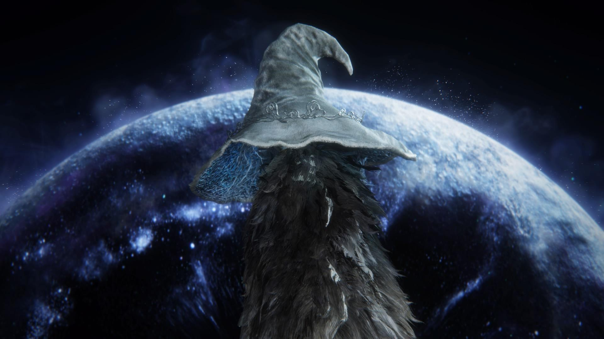

responda as perguntas e descubra qual final de elden ring voê faria.
ate onde você iria por quem ama?
você tentaria faxer o impossivel por orgulho?
você se queimaria por quem você ama?

era das estrelas.
você tem grandes poderes em mãos.
você ajudaria uma pessoa para o bem do mundo?
mesmo que custa-se sua vida?
você ajudaria o mundo fazendo a diferença?
você retiraria todos os pecados de quem você mais ama?.
O rio à direita termina em uma área pantanosa. Apesar de belas vistas, não há sinais da cidade perdida aqui.
final: may chaos take the world.
Retornando e escolhendo o rio à esquerda, você finalmente encontra a cachoeira escondida e as inscrições que levam à cidade perdida.
a tarnished become a lord